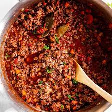

Bolognese

Description
The Bolognese sauce is a Italian ragù made with minced beef and pork, pancetta and vegetables.
ingredients
- 500g of beef and pork ground meat mix
- 1 large onion
- 1 large carrot
- 2 celery ribs
- 150g pancetta or bacon
- tablespoon of tomatoe paste
- 1 cup of dry white wine
- 1 twig of rosemary
- 2 bay leaves
- 1 or 2 block of dark chocolate
- Salt and pepper to taste
Steps
- First,fine dice a large onion, a large carrot and two celery ribs.
- Cube the pancetta then render the fat in a large pan.
- Add the beef and pork ground meat and brown in the pan.
- Add the diced vegetables, saute them for around 5 minutes.
- Add a tablespoon of tomatoe paste, cook it until it sticks to the pan.
- Deglaze with a dry white wine of choice, then add 400 ml of water.
- Add a pinch of rosemary and two bay leaves then cook for 40 minutes at least. if it gets too dry add a little bit more water.
- After 40 minutes kill the heat and stir in a block or two dark chocolate and then leave the sauce to rest for at least 15 min.